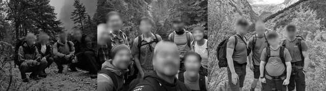

Status Update
As of early March 2026 it's still winter in Southern Bavaria. There will be no good hike until weather and trail conditions improve. Next update should be in April.
Reservations
Some hut reservations for have been made for the below dates, in the event the weather cooperates and people are interested in going. Reservations will be canceled if there's no interest, or if they tell me I cannot keep so many. There's still several vacancies in May and early June mid-week, but the snow may not fully melt by then. **If you know another date that would work for a group of people, let me know it so I can try to make reservations for it.**
| Reservation Date | Reservation at |
|---|---|
| Wed-Thu 17-18 Jun | Reintalanger |
| Sat-Sun 20-21 Jun | Reintalanger |
| Thu-Fri 25-26 Jun | Knorrhütte |
| Sat-Sun 27-28 Jun | Reintalanger |
| Thu-Fri 02-03 Jul | Reintalanger |
| Sat-Sun 25-26 Jul | Reintalanger |
| Sat-Sun 15-16 Aug | Reintalanger |
| Sat-Sun 22-23 Aug | Reintalanger |
| Thu-Fri 27-28 Aug | Reintalanger |
The Hike
Reintal Valley Route
Distance: 13.5 mi (21.7 km) Climb: 7,200 ft (2,200 m) Time: 10 hrs.
The hike from Garmisch-Partenkirchen Skistadion up Reintal Valley to Germany's highest mountain peak, the Zugspitze, is both awe-inspiring and challenging. Best completed in warmer season from late June to September, the trail is safe and suitable for any fit hiker - no technical skills or special equipment is needed. It's difficulty lies in its length and elevation gain, most of which occurs towards the end of the hike.
The route first passes through the impressive Partnach Gorge natural monument. It gently ascends with the Partnach river up the scenic Reintal valley south, then west. About 1 km past the Reintalangerhütte (9 mi), the trail ascends steeply past treeline into rockier alpine terrain. After the Knorrhütte (11 mi), the trail slowly begins to flatten out and alternate between more gentle uphills and stretches of flat ground, and passes through several snowfields. At Sonnalpin Station (13 mi) hikers may ride the tram the rest of the way up, or continue on foot if enough time remains.
The trail continues up the large scree field and crosses onto a more solid but exposed rocky section with anchored cables as safety handles. This is considered a low-grade via ferrata, requiring no additional gear but more caution if snow is present. Here is also the steepest part, requiring more leg stamina and perseverence, but the views along the ridge are spectacular. At the very top are more panoramic views, restaurants, and access to the summit cross.
For reviews and more information about this hike, see Der-Eskapist, Bavaria.travel, Triptins.com, and Strava.
Online Maps
Downloadable Map
Download one of these ~4mb files to your device as a backup map, for sections of trail without cell signal.
Timing
These are potential hiking schedules, based on average times from previous hikes.
| A | Hut-stay (Reintalanger) |
|---|---|
| Day 1 | Skistadion Parkplatz |
| 1100 | Hike from Parkplatz |
| 1300 | Bockhütte (cafe) |
| 1500 | Arrive Reintalanger |
| 1800 | Day 1 Dinner |
| Day 2 | Reintalangerhütte |
| 0600 | Day 2 Breakfast |
| 0700 | Hike from Reintalanger |
| 0915 | Knorrhütte |
| 1130 | Sonnalpin Station |
| 1330 | Top of Zugspitze |
| 1600? | Zugspitze Parkplatz |
| 1730? | Skistadion Parkplatz |
| B | Hut-stay (Knorrhütte) |
|---|---|
| Day 1 | Skistadion Parkplatz |
| 0930 | Hike from Parkplatz |
| 1130 | Bockhütte (cafe) |
| 1330 | Reintalangerhütte |
| 1545 | Arrive Knorrhütte |
| 1800 | Day 1 Dinner |
| Day 2 | Knorrhütte |
| 0630 | Day 2 Breakfast |
| 0730 | Hike from Knorrhütte |
| 0945 | Sonnalpin Station |
| 1115 | Top of Zugspitze |
| 1400? | Zugspitze Parkplatz |
| 1530? | Skistadion Parkplatz |
| C | Thru-hike in one day |
|---|---|
| Day 1 | Skistadion Parkplatz |
| 0430 | Hike from Parkplatz |
| 0630 | Bockhütte (cafe) |
| 0830 | Reintalangerhütte |
| 1045 | Knorrhütte |
| 1300 | Sonnalpin Station |
| 1430 | Top of Zugspitze |
| 1630? | Zugspitze Parkplatz |
| 1800? | Skistadion Parkplatz |
| D | Thru-hike Overnight |
|---|---|
| Day 1 | Skistadion Parkplatz |
| 0000 | Hike from Parkplatz |
| 0200 | Bockhütte (cafe) |
| 0400 | Reintalangerhütte |
| 0615 | Knorrhütte |
| 0830 | Sonnalpin Station |
| 1000 | Top of Zugspitze |
| 1300? | Zugspitze Parkplatz |
| 1430? | Skistadion Parkplatz |
Notes for Leaders
- Along some of the trail, there is no cellular signal.
- Hikers should check the map and signs at trail junctures to confirm they are headed in the right direction, especially at junctures marked with thick red arrows on the downloadable map. On the Atlas.Bayern map, be careful around waypoint 5 at the river fork, waypoints 6 & 7 along the trail, and leaving the Knorrhütte at waypoint 11.
- In the early morning when the Partnach Gorge is closed, it must be bypassed by going up and over. The shortest way is to take the stairs immediately left of the ticket turnstile, cross overhead and continue up the trail. Higher up at the fork, cross the gorge using the bridge to your left. At the next intersection follow the signs to the right towards Kaiserschmarrn Alm, and continue past the Alm and down again. The trail rejoins a before the river fork. This bypass is depicted in the downloadable map and on the Atlas.Bayern map, waypoints 1 thru 4.
- There are three different trams that terminate at the Top of Zugspitze, providing three different ways to ride back down. The Zugspitze Seilbahn descends to the Eibsee in Germany - take this one for the most direct route to the Zugspitze parkplatz. A one-way ticket down will cost around €45, and the ticket can also be used to take the train from Eibsee into Garmisch. The Gletscherbahn tram descends to Sonnalpin station, where you can catch the Zugspitzebahn Cogwheel train to Eibsee or further to the Garmisch Hauptbahnhof. The Tyrolean Zugspitzbahn tram is only accessible from the Austrian side of the summit building, and it descends into Austria.
- Hikers need to be aware of when the "last tram down" is, so they don't miss it. In the summer the last tram may be at 1730, but off-season it may be at 1630. Also note that all trams and the train close for maintenance several weeks out of the year (usually on weekdays). Schedules are posted to the websites, which as of early 2026 are here and here.
- Overnight parking is available at the Skistadion Parkplatz (prepay using the machine) as well as at the Zugspitze Parkplatz. However, it is recommended to park at the Zugspitze Parkplatz and taxi or bus over to the Skistadion starting point before the hike, otherwise it could add an additional ~40 minutes by car or ~80 minutes by bus/train to your departure time.
- If you must commute from the Zugspitze Partkplatz back to the Skistadion there are multiple options. A taxi all the way to the Skistadion costs around €60. For €3-€6 per person you can catch the bus from the Eibsee parkplatz bus stop back to the Garmisch-Partenkirchen hauptbahnhof. Depending upon the bus, it may continue directly to the Skistadion. The train is free with your tram ticket, and even if you have to change trains on the way, it will eventually take you here, just east of the hauptbahnhof. Walk north to the pedestrian underpass and cross under the tracks to reach the main hauptbahnhof building and the bus/taxi station. From there you can catch another a bus to the Skistadion for around €3 per person, or or three to five people can share a taxi for around €15.
- In addition to the hut and meal options discussed in the next section, all huts offer some form of food/snack service between 1100 and 1700 daily. Plan to pay with cash. Off-season (outside of summer), the huts are not open, even for meals. The restaurants at the top of the Zugspitze are usually open on days the tram is running.
The Huts
It is illegal to camp outside in this region. Therefore, mountain huts along the trail provide an essential service - they allow people to spend the night, and also to split the hike into multiple days. Some other benefits are-- Hikers don't have to walk the first several miles in complete darkness, and can enjoy the views of the lower Reintal valley. They don't have to bypass the Partnach Gorge, which is closed in the early morning. They don't have to worry about making it to the top in time to catch the last tram down. Also of note, spending the night at a hut allows the group to make an early start for the summit on the second day (much like starting a thru-hike at midnight), which could potentially avoid the throngs of tourists that gather at the top on sunny weekend afternoons. The only disadvantage is having to pay room and board, and having to carry more gear like a towel and shower shoes.
Reintalangerhütte
The Reintalangerhütte is below treeline at about 9 miles along the trail. It sits in the upper Reintal valley not far from the wellspring of the Partnach river. Nearby there are some relaxing grassy meadows, and places along the river to lay ones feet in the cold, clear water. According to their website, they no longer have showers.
Knorrhütte
The Knorrhütte is above treeline, surrounded by rocky alpine karst terrain. It sits more than halfway up the main uphill section of trail, at about 11 miles along. It's 2 miles further and over 2,000 feet higher than the Reintalangerhütte, but also that much closer to the top. Per their website they have pay-to-use showers.
Notes for Leaders
- Both huts listed above are managed by the German Alpine Club (DAV) with some unique rules. One rule states all boots must be left in a special room - guests must change into slippers or sandals to keep the inside floors clean. Another rule states guests are prohibited from using regular sleeping bags for hygenic reasons. The hut provides blankets and pillows, and asks guests to bring their own sleeping bag liner (without insulation), also called a "hüttenschlafsack". These sell for around €25 in outdoor stores, or ask around someone might have extras to lend.
- Overnight stay at either hut costs €25 to €45 per person depending upon room type, and €45 to €50 per person for half-board which includes dinner and breakfast, so overall around €70 to €95 per person. You select if you want the half-board when you make the reservation. (In 2025 the half-board at Reintalangerhütte was pretty good and the atmosphere nice.)
- Reservations are managed through separate but easy-to-use online reservation systems that usually open beginning in December the previous year, thus many beds get booked far in advance. However, it's free to cancel up until a week before the booking date, (after which cancellation fees begin to rise), so keep checking for vacancies, particular within 7-10 days of your preferred dates. Cancellation policy here.
- To make a reservation online and for any applicable late-cancellation fees, the system accepts credit card. But when you arrive in person at the hut on the day of your booking, they require you to pay the full reservation amount in Euros.
- If you can't make your booking and it's too late to cancel online, call the hut directly to cancel using the number on their website. Otherwise, you will be charged and the hut staff could report you as a no-show, which could trigger an unnecessary search or emergency response.
Weather & Safety
Weather and trail conditions are critical factors from a safety standpoint. If stormy weather or poor visibility is forecasted, it is probably worth rescheduling the hike for a later date. Moderate snowfall can make the trail impassable above a certain elevation. Webcams can be used to observe conditions at altitude.
Forecasts & Reports
Webcams
Alpine Safety
The German Alpine Club (DAV) cautions hikers, "The Reintal Valley Route should not be underestimated, as the distance to the next town is very long and you are on the trail in great seclusion," and offers three warnings:
- Beware of foggy conditions above treeline - the trail is not well-marked!
- If you are exhausted at Sonnalpin, do not continue - take the tram instead!
- Beware of snow and slippery spots on the summit flank - hold onto the cables!
Emergency Contacts
The nearest hospital emergency room is at Klinikum Garmisch-Partenkirchen Auenstraße 6, 82467. The hospital telephone number is 08821-770.
Dial 112 for regular emergency assistance. The same number can be used to reach the Bergwacht, Garmisch-Partenkirchen's Mountain Rescue Service responsible for emergency mountain rescue operations in the region. They work closely with helicopter crews to conduct aerial rescues. Dial 116117 in Germany for non-emergency, on-call or after-hours medical assistance.
In Austria, dial 140 for the Austrian Mountain Rescue Service, or 144 for Emergency Medical Assistance. If these numbers do not work, dial 112.
Packing List
In the Alps, weather and temperature can change quickly and unexpectedly. You could encounter very hot and very cold temperatures at different points along the same trail. The packing list includes extra layers - both warm and cold - so you can adapt to a variety of conditions.
| Packing List | Notes |
|---|---|
| Don't Forget Your... | |
| ID/Passport | |
| Money/credit cards | most cafes accept card, but bring Euros to be safe |
| Phone & charging brick | limited to no charging ability at huts |
| Essential Gear & Clothing | consider the weather when packing **starred items |
| Headlamp or flashlight, small | for early hiking, and in the huts |
| **Hat, warm | neck gaiter is a good addition if colder weather |
| **Gloves, light (or warm) | wire cabling at the top; could get wet/cold |
| **Goggles, sunglasses or headband | prevent snow-blindness |
| Small bag for trash | pack out all trash |
| Sunscreen and/or hat | prevent sunburn |
| Boots, sturdy, broken-in | after mile 9 it gets rocky, with some snow |
| Socks, hiking | |
| Extra pair hiking socks | |
| Underwear | |
| **Pants, hiking, athletic/light | non-cotton, pants best for range of temperatures |
| **Shirt, hiking, athletic/light | non-cotton, long- or short-sleeved per forecast |
| **Shorts, athletic/light | for warm weather, or relaxing at hut |
| **Shirt, long-sleeve, warm | warm layer #1, for cold weather or relaxing at the top |
| **Wind-breaker or rain jacket | warm layer #2 |
| Long-underwear bottom | extra warm layer |
| Long-underwear top | extra warm layer |
| Backpack, light/medium | to hold anything you aren't wearing |
| Food & Water | |
| Water (2 liters minimum) | no safe refill locations |
| Snack food, light | snacks for the hike, knowing restaurants are at the end |
| For Leaders | |
| First-aid kit | |
| Physical map | |
| Important for Hut-Stay | |
| €100 and some change | room & board payable only in cash |
| Shower shoes | boots not allowed inside huts |
| Toiletries (small) | both huts equipped with bathrooms, sinks |
| Towel & soap (small) | |
| Sleeping bag liner | regular sleeping bags not allowed; see hut notes |
| Leave in the Car/Hotel | |
| Change of clothing, complete | for the trip home |
| Optional/Extras | |
| Ear plugs | may help when sleeping in hut group rooms |
| Deck of cards | to pass the time when waiting for dinner |
| Swimsuit, or quick-dry clothing | for a dip in Partnach or Eibsee, if warm enough |
Let's Go!
How to sign up
You read about this hike, that it's not a walk in the park, and you are still interested in going. What should you do?
First, get on the 2962m signal group chat or ask someone to add you. This is where any member can propose a plan with a potential date, and others can give it a thumbs-up if they are optimistic about being able to go on that date. All potential participants should read and understand the full contents of this page, which should inform and help you to complete the hike successfully.
Next, hopefully you, me or someone else will reply and volunteer as leader for the proposed plan. Volunteer leaders (there can be multiple) should meet with me to discuss the plan and provide feedback, and I can answer any other questions that arise.
At around one or two weeks out, once a determination is made on who is still in and committed to going, the leaders should create a separate signal chat with the participants only. The purpose of this group is to coordinate details, such as how they will all get to the parking lot on day 1, what time to meet up, if anyone needs to borrow anything, etc. Barring vacancy or travel limitations, anyone should be able to join up even later by contacting the volunteer leader and asking to be added to the group. By creating a new group, it helps keep the noise in the main chat to a minimum.
I hope these procedures make sense. The goal is to enable others to go on this hike, and promote peer-leadership and responsibility-taking.
Etcetera
Additional Notes
- If you are take Germany highway 7 to Garmish, it passes through Austria. You do not have to buy an Austrian vignette if you make no stops and drive straight through to Garmisch. If you stop in Austria you have to buy a vignette - sold at local gas stations, stores, or online.
- There's a gas station on the way that has unique hours, which may influence your travel plans. Ask me for details.
- For additional lodging options closer to the Garmisch-Partenkirchen Skistadion, check out this Airbnb and this fancy hotel. The Partnach Alm may also be an option. More camping and lodging options can be found in Garmisch-Partenkirchen, Grainau or other nearby towns.
- The German Alpine Club (DAV)'s advertises the official Zugspitze Tour as a 3-day hike. The first night is spent in the Reintalangerhütte. Hikers climb the Zugspitze on the second day, and then stay the second night in the Knorrhütte. Then on the third day they descend via the Gatterl, into Ehrwald, Austria.
- For anyone interested in ascending Zugspitze from Austria via the Gatterl route, it may be shorter distance, but it's still a serious hike at 9 mi (14.3 km) long and up to 6,400 ft (1,950 ) uphill. Like the Reintal valley route, thru-hikers are better getting started early in the day. Alternatively, if hikers begin at 0800 and take the Ehrwaldbahn gondola up, they may be able to reach Sonnalpin around 1330, and if hiking on, may reach the top of the Zugspitze by around 1500. More information here.
- Occasionally the Austrian tram to Zugspitze opens early or stays open late for special events (assuming you can commute to/from Austria or wherever you left your car). Hikers should confirm the cost and availability of a 1-way ticket on these dates/times, before committing to hiking and reaching the top outside regular hours of operation. See here and here.
About this Page
Hello! I'm Michael, and I wrote this page to share information and encourage others to go on this really cool hike. Anyone is welcome to use this information to lead their own hike, but do so safely and at your own risk. Please submit feedback or questions to me via signal.
If you go on this hike and I'm not there, please send me a picture so I know this page worked (group pictures in the valley are preferred).
